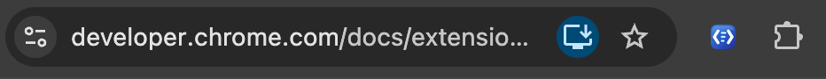
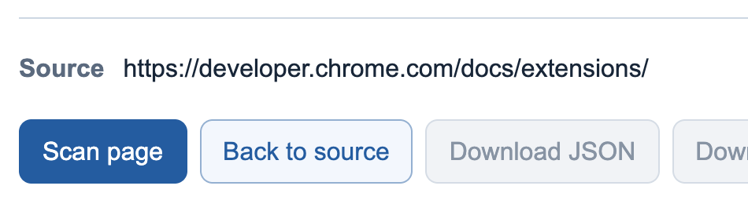

Meta Tag Analyzer
Pin it to your toolbar
- Click Extensions, the puzzle piece beside Chrome’s address bar.
- Click the pin next to Meta Tag Analyzer. Its icon will appear on your toolbar.

Inspect your first page
Show how to pin it-
Open the analyzer
Open the page you want to check and let it finish loading. Click Meta Tag Analyzer on the toolbar or in Chrome’s Extensions menu.

-
Scan the source page
In the Meta Tag Analyzer tab that opens, click Scan page.

-
Read the report
Check the source URL at the top. Review the counts and values for the page title, description, and other metadata.

Use Refresh report after editing the source. To save the report, choose Download JSON or Download text.